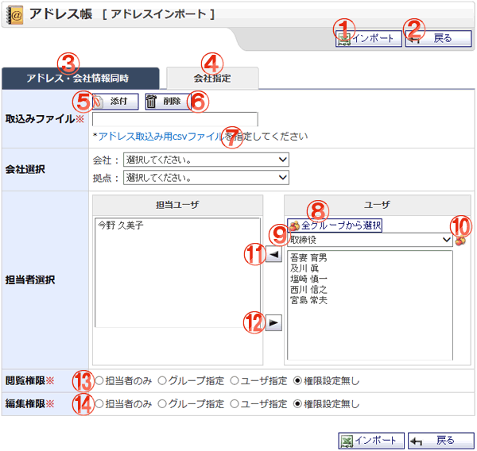

会社指定でアドレスのインポートを行う画面です。アドレス情報をCSV形式のファイルで取り込みます。

機能説明
インポートボタンアドレスインポート確認画面へ遷移します。入力内容に不備がある場合エラーメッセージが表示されます。 |
戻るボタン遷移元の画面へ遷移します。 |
|---|---|
アドレス・会社情報同時タブ取り込み形式をアドレス・会社情報同時に変更します。それにより、入力・表示項目とcsvファイルの形式が変更されます。 |
会社指定タブ取り込み形式を会社指定に変更します。それにより、入力・表示項目とcsvファイルの形式が変更されます。 |
添付ボタン添付ファイル選択画面をポップアップで表示します。ファイルを選択し、確定すると添付のリストに選択したファイル名がセットされます。 |
削除ボタン添付ファイルを削除します。 |
アドレス取込み用csvファイルアドレス取込み用csvファイルのサンプルをダウンロードします。 |
会社・拠点選択コンボアドレスを登録する会社・拠点を選択します。 |
全グループから選択ボタンポップアップで全グループから選択画面が開きます。 |
グループコンボグループの一覧が表示されます。 |
グループボタンポップアップでグループ選択画面が開きます。 |
担当者追加ボタンユーザ一覧で選択されているユーザを担当者一覧へ追加します。 |
担当者削除ボタン担当者一覧で選択されているユーザを担当者一覧から削除します。 |
閲覧権限閲覧権限を選択します。[グループ指定][ユーザ指定]を選択した場合は対象のグループ、ユーザを選択するリストが表示されます。 |
編集権限編集権限を選択します。選択された閲覧権限の値によって対象のグループやユーザの選択リストが表示されます。 |
表示・入力項目説明
取込みファイル
取込みファイルを選択します。
会社
会社を選択します。
拠点
拠点を選択します。
担当者
担当者を選択します。
閲覧権限
閲覧権限を選択します。[グループ指定][ユーザ指定]を選択した場合は対象のグループ、ユーザをリストから選択します。
編集権限
編集権限を選択します。選択された閲覧権限の値によって対象のグループやユーザの選択リストが表示され選択可能となります。